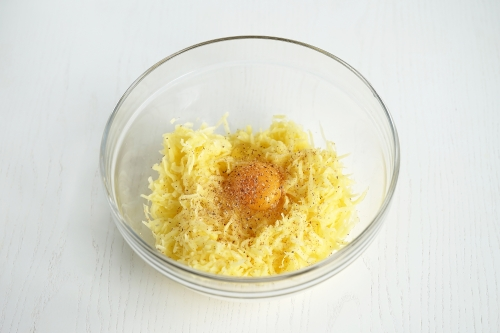
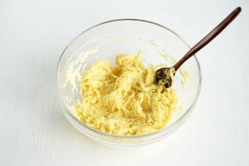

Драники
Ингредиенты:
- Картофель - 600г
- Лук репчатый - 1 шт
- Яйцо куриное - 1шт
- Мука пшеничная - 2ст.л
- Масло растительное - 4 ст.л
- Соль - по вкусу
- Специи - по желанию
Приготовление:
- Очистить картофель от кожуры и промыть. Натереть картофель на крупной тёрке. Добавить к картофелю соль и перемешать. Оставить на пять минут, чтобы картофель дал сок. Не игнорируйте этот шаг, ведь именно он помогает сделать блюдо максимально вкусным. Если не дать картофелю пустить сок, а после его не отжать, то в процессе выделится много лишней жидкости, а значит нам понадобится больше муки, и драники уже не будут такими нежными и хрустящими.
-

- Отжать руками лишний сок с картофеля и переложить его в глубокую миску. В середине сделать углубление и вбить в него одно куриное яйцо. При желании можно добавить немного мускатного ореха. Он благородно оттеняет вкус картофеля и придает простому блюду изысканный вкус.На этом этапе можно также дополнительно добавить другие ингредиенты по вашему желанию. Например, измельчённую зелень, сыр или мелко нарезанный бекон. Очень хорошо картофель сочетается также с орегано и репчатым луком. Всё хорошо перемешать до объединения. Однако, если использовать добавки, рецепт уже будет авторским, а не классическим
- 
- Всыпать к картофелю муку и хорошо перемешать с помощью ложки или лопатки. В классическом варианте драников используется пшеничная мука. Если вы хотите разнообразить ваше блюдо, то её можно заменить на то же количество рисовой муки. В этом случае драники получатся ещё более хрустящими.Не стоит убирать муку из рецепта вовсе. Конечно, драники непременно получатся, но будут более жирными на вкус. Именно мука помогает достичь максимально нежного и гармоничного вкуса. Хотя и тут важно помнить про меру, ведь стоит чуть переборщить, и текстура драников станет более плотной и не такой вкусной.
- 
- Влить на сковороду часть растительного масла. Поставить сковороду на огонь чуть ниже среднего. Хорошо прокалить масло на сковороде. Это очень важно, чтобы драники не прилипали к сковороде. Как только масло прогреется, приступать к жарке драников. Столовой ложкой брать картофельную массу и выкладывать на сковороду, формируя драник.Обжаривать картофельные драники на сковороде на огне чуть ниже среднего до красивого золотистого цвета и румяных краёв. Перевернуть драники на другую сторону и так же обжарить. Не стоит делать огонь слишком сильным, иначе драники быстро приготовятся снаружи и останутся сырыми внутри. Также не стоит накрывать сковороду крышкой, в этом случае драники не получатся такими хрустящими по краям.

- Обжарить таким образом все драники поочерёдно. В процессе приготовления картофель будет впитывать масло, поэтому во время готовки его нужно немного подливать на сковороду. Готовые драники выложить на тарелку с бумажным полотенцем. Это нужно для того, чтобы в бумагу впитался лишний жир.Подавать картофельные драники горячими. Сервировать их можно со сметаной или любым другим любимым соусом, например, томатным или чесночным. Очень хорошо драники сочетаются со свежими овощами и зеленью. Картофельные драники очень вкусные и в холодном виде. Их удобно взять с собой на работу, в дорогу или на пикник. Картофельные драники на сковороде по классическому рецепту готовы. Приятного аппетита!